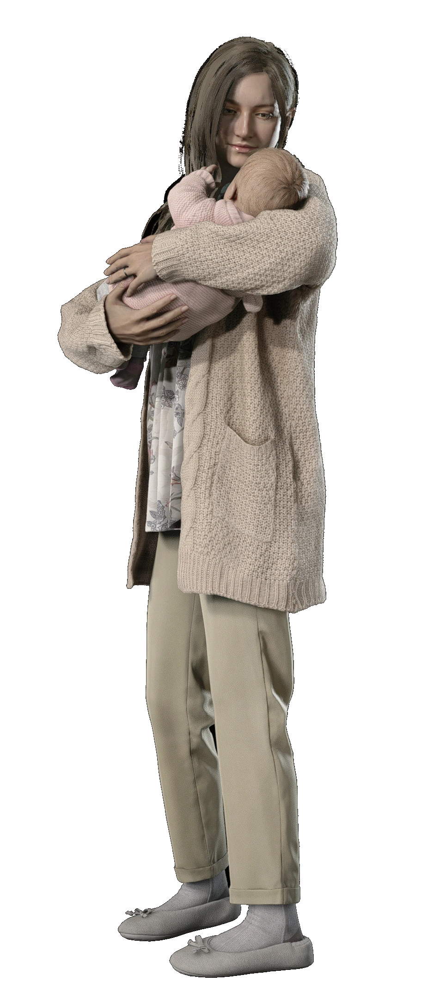
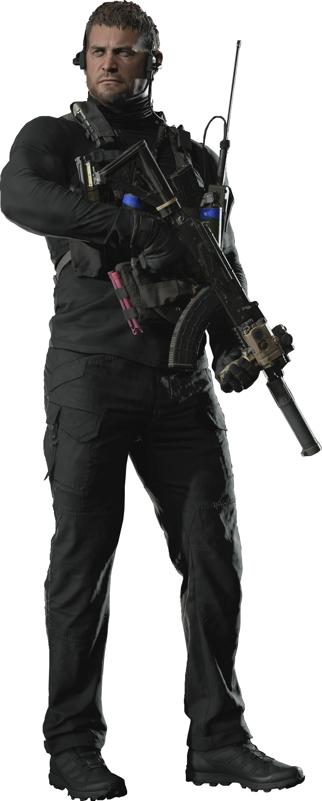

Main Characters
Ethan Winters
Role: Protagonist of Resident Evil Village.
A father searching for his daughter Rosemary.
Survives intense biohazard conditions due to accelerated regeneration.
Rosemary Winters
Role: Ethan and Mia's infant daughter.
Significance: She has mysterious powers due to her parents' exposure to the Mold.

Mia Winters
Role: Ethan’s wife.
Background: Formerly infected with the Mold.
Twist: The "Mia" at the beginning is actually Mother Miranda in disguise.

Chris Redfield
Role: Veteran BSAA operative.
Background: Known from earlier Resident Evil games.
Twist: Initially appears as an antagonist but is revealed to be helping in secret.